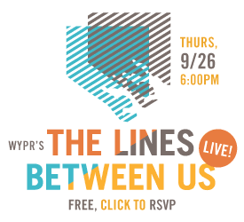

WYPR’s “Lines Between Us” Live! Remaking the Landscape of Inequality in the Baltimore Region
Thursday, Sept. 26, 6 p.m.
Univ. of Md. School of Social Work Auditorium
525 W. Redwood St., Baltimore, MD 21201
Please RSVP!
UPDATE Wed. Sept. 25: From the volume of online RSVPs, we are expecting a very large turnout. We hope everyone will get a seat in the auditorium, but we’ve reserved a classroom with an audio/video feed in case there is overflow. We will seat the auditorium on a first-come, first-served basis, and the doors will open at 5:15 p.m. You must RSVP to attend the event.
On Thursday, September 26 at 6:00 p.m., WYPR will record the final episode of its series “The Lines Between Us” in front of a live audience at the University of Maryland School of Social Work auditorium.
Throughout “The Lines Between Us,” Maryland Morning with Sheilah Kast has laid out the Baltimore region’s landscape of inequality. Join us at this free public event as we look back on our year-long investigation and ask: What tools within local, state, and federal government are being used to dismantle inequality here?
There will be audience Q&A, and our guests are:
- Nikole Hannah-Jones, award-winning civil rights reporter for ProPublica
- Megan Haberle, policy counsel at Poverty and Race Research Action Council
- Lisa Williams, director, Baltimore County Public Schools Office of Equity and Cultural Proficiency
- Lisa Garry, director of system reform projects, Maryland Department of Juvenile Services
The event is free. So is parking! Park in the Grand garage (5 N. Paca, between Baltimore and Fayette), and bring your ticket for validation.
Better yet: take Light Rail to Baltimore St. or Metro to Lexington Market or Charles Center. Many MTA bus lines stop close by including #8, #30, #36, #40, #46, #48. For a full list, click the nearby bus icons at Google Maps, and double check them against the MTA bus schedules.
For interviews and further information, please contact Maryland Morning Senior Producer Lawrence Lanahan: llanahan@wypr.org, 410-735-1612.
Feel free to share our poster for the event, or print and post it yourself! Click below for the PDF.